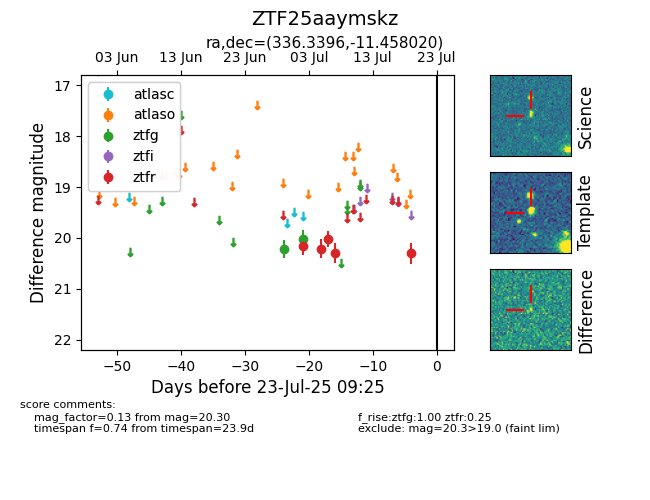

Target ZTF25aaymskz at 2025-07-23 11:48, see:
FINK: fink-portal.org/ZTF25aaymskz
Lasair: lasair-ztf.lsst.ac.uk/objects/ZTF25aaymskz
ALeRCE: alerce.online/object/ZTF25aaymskz
alt names
ZTF25aaymskz (ztf,fink)
coordinates:
equatorial (ra, dec) = (336.3396,-11.45802)
galactic (l, b) = (50.2939,-52.33210)
photometry
last ztfg=20.01, ztfr=20.30
2 ztfg, 5 ztfr detections
